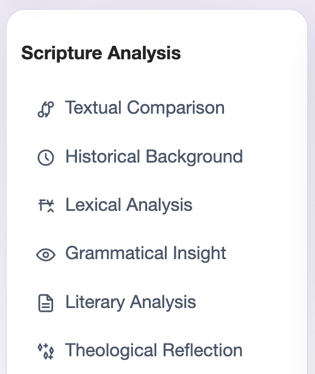

Dialogical Exegesis Flow
The DEF method invites users into a structured dialogue where Scripture is explored through dynamic lenses.

DX Sermon
DX Sermon is an all-in-one web-based biblical study environment that transforms a single verse into a rich, multi-dimensional exploration.
DX Sermon gives pastors, teachers, and seekers a living dialogue with Scripture through direct text comparison, historical context, lexical analysis, literary analysis, grammatical insight, and theological reflection.
The source DX Sermon page uses a layered presentation: a strong hero, a focused explanatory section, and a toolkit layout that supports fast reading and careful study.
This local page keeps that same structure while remaining a separate CAIM implementation.
The DEF method invites users into a structured dialogue where Scripture is explored through dynamic lenses.
From tension and twist to testimony and application, the toolkit helps shape faithful communication.
Review, movement, narrative, 1-point, Lowry loop, and Bible study assist help finalize sermons with clarity.